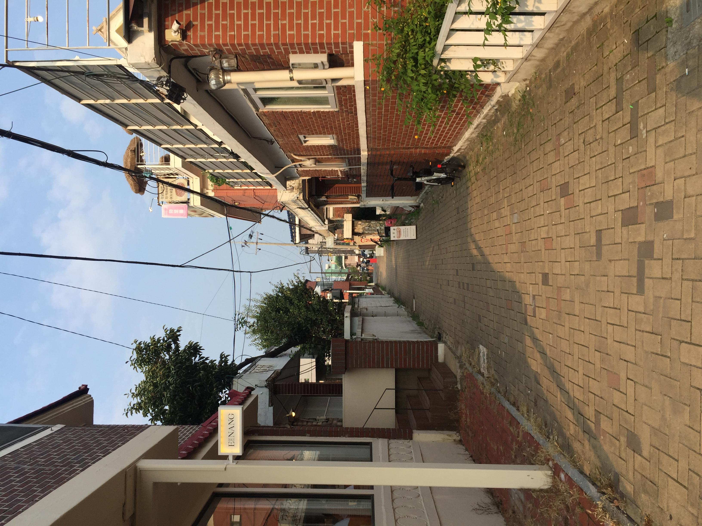

Haenggung Tour schedule
|  |
행궁동은 대한민국 경기도 수원시에 위치한 동네로, 수원의 역사와 문화를 고스란히 담고 있는 곳입니다. 조선 시대의 수원 화성을 중심으로 펼쳐진 행궁동은, 아름다운 전통 한옥과 현대적인 카페, 맛집들이 조화를 이루고 있어 많은 관광객들에게 사랑받고 있습니다. 행궁동의 주요 명소로는 유네스코 세계문화유산으로 지정된 수원 화성과 화성 행궁이 있으며, 이곳에서는 조선 시대의 역사적 현장을 생생하게 체험할 수 있습니다. 또한, 행궁동의 거리에는 다양한 문화 예술 공간이 있어, 방문객들은 전통과 현대가 어우러진 독특한 분위기를 즐길 수 있습니다. 특히, 행궁동은 다양한 축제와 문화 행사가 열리는 곳으로, 수원 화성문화제와 같은 행사에서는 지역 주민들과 관광객들이 함께 어우러져 풍성한 볼거리와 즐길 거리를 제공합니다. 또한, 전통 음식점과 현대적인 카페, 공방 등이 밀집해 있어 미식가들과 쇼핑을 즐기는 이들에게도 인기가 많습니다. 수원 행궁동은 과거와 현재가 조화를 이루며, 다양한 문화적 체험과 역사적 탐방을 즐길 수 있는 매력적인 관광지입니다. Eduventure와 함께 아름다운 추억을 만들어 보세요. |
# 13:00점심식사 |
플랑문
제철 식재료로 만드는 식사를 즐길 수 있는 곳 |
|
# 14:30카페 방문 |
위해브투데이
레몬젤리 그리고 수박그라니따 등, 여름의 맛을 맛볼 수 있는 곳 |
|
# 17:00구경 및 산책 |
사소한 오예
소품샵 기프트 셀렉트 샵소품샵 방화수류정자연명소 |
|
# 18:10술 |
오브제
와인 & 양식 |